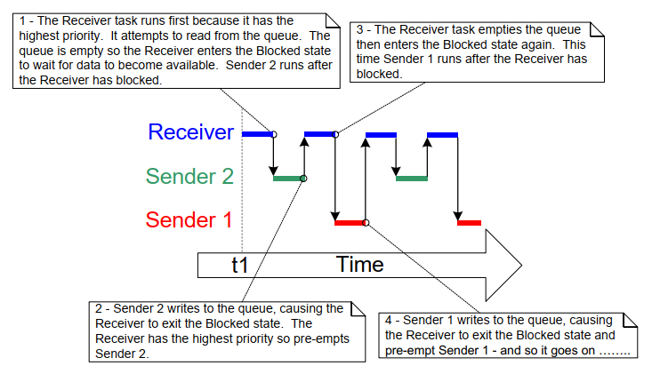
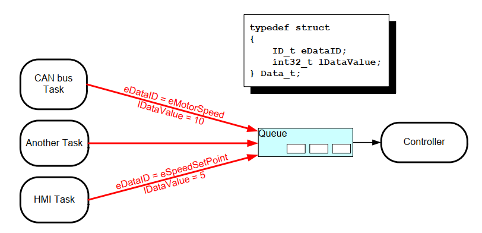

5 Queue Management
5.1 Introduction
'Queues' provide a task-to-task, task-to-interrupt, and interrupt-to-task communication mechanism.
5.1.1 Scope
This chapter covers:
- How to create a queue.
- How a queue manages the data it contains.
- How to send data to a queue.
- How to receive data from a queue.
- What it means to block on a queue.
- How to block on multiple queues.
- How to overwrite data in a queue.
- How to clear a queue.
- The effect of task priorities when writing to and reading from a queue.
This chapter only covers task-to-task communication. Chapter 7 covers task-to-interrupt and interrupt-to-task communication.
5.2 Characteristics of a Queue
5.2.1 Data Storage
A queue can hold a finite number of fixed size data items1. The maximum number of items a queue can hold is called its 'length'. Both the length and the size of each data item are set when the queue is created.
FreeRTOS message buffers, described in chapter TBD, provide a lighter weight alternative to queues that hold variable length messages.
Queues are normally used as First In First Out (FIFO) buffers, where data is written to the end (tail) of the queue and removed from the front (head) of the queue. Figure 5.1 demonstrates data being written to and read from a queue that is being used as a FIFO. It is also possible to write to the front of a queue, and to overwrite data that is already at the front of a queue.

Figure 5.1 An example sequence of writes to, and reads from a queue
There are two ways in which queue behaviour can be implemented:
-
Queue by copy
Queuing by copy means the data sent to the queue is copied byte for byte into the queue.
-
Queue by reference
Queuing by reference means the queue only holds pointers to the data sent to the queue, not the data itself.
FreeRTOS uses the queue by copy method because it is both more powerful and simpler to use than queueing by reference because:
-
Queuing by copy does not prevent the queue from also being used to queue by reference. For example, when the size of the data being queued makes it impractical to copy the data into the queue, then a pointer to the data can be copied into the queue instead.
-
A stack variable can be sent directly to a queue, even though the variable will not exist after the function in which it is declared has exited.
-
Data can be sent to a queue without first allocating a buffer to hold the data—you then copy the data into the allocated buffer and queue a reference to the buffer.
-
The sending task can immediately re-use the variable or buffer that was sent to the queue.
-
The sending task and the receiving task are completely de-coupled; an application designer does not need to concern themself with which task 'owns' the data, or which task is responsible for releasing the data.
-
The RTOS takes complete responsibility for allocating the memory used to store data.
-
Memory protected systems restrict access to RAM, in which case queueing by reference can only be accomplished if the sending and receiving tasks can both access the referenced data. Queuing by copy allows data to pass across memory protection boundaries.
5.2.2 Access by Multiple Tasks
Queues are objects in their own right and can be accessed by any task or ISR that knows of their existence. Any number of tasks can write to the same queue, and any number of tasks can read from the same queue. In practice, it is very common for a queue to have multiple writers, but much less common for a queue to have multiple readers.
5.2.3 Blocking on Queue Reads
When a task attempts to read from a queue, it can optionally specify a 'block' time. This is the time the task is kept in the Blocked state to wait for data to become available from the queue, if the queue is already empty. A task that is in the Blocked state waiting for data to become available from a queue is automatically moved to the Ready state when another task or interrupt places data into the queue. The task will also be moved automatically from the Blocked state to the Ready state if the specified block time expires before data becomes available.
Queues can have multiple readers, so it is possible for a single queue to have more than one task blocked on it waiting for data. When this is the case, only one task is unblocked when data becomes available. The task that is unblocked is always the highest priority task that is waiting for data. If two or more blocked tasks have equal priority, then the task that is unblocked is the one that has been waiting the longest.
5.2.4 Blocking on Queue Writes
Just as it can when reading from a queue, a task can optionally specify a block time when writing to a queue. In this case, the block time is the maximum time the task will be held in the Blocked state to wait for space to become available on the queue, should the queue already be full.
Queues can have multiple writers, so it is possible for a full queue to have more than one task blocked on it waiting to complete a send operation. When this is the case, only one task is unblocked when space on the queue becomes available. The task that is unblocked is always the highest priority task that is waiting for space. If two or more blocked tasks have equal priority, then the task that is unblocked is the one that has been waiting the longest.
5.2.5 Blocking on Multiple Queues
Queues can be grouped into sets, allowing a task to enter the Blocked state to wait for data to become available on any of the queues in the set. Section 5.6, Receiving From Multiple Queues, demonstrates queue sets.
5.2.6 Creating Queues: Statically Allocated and Dynamically Allocated Queues
Queues are referenced by handles, which are variables of type
QueueHandle_t. A queue must be explicitly created before it can be used.
Two API functions create queues: xQueueCreate(), xQueueCreateStatic().
Each queue requires two blocks of RAM, the first to hold its data
structure, and the second to hold queued data. xQueueCreate() allocates
the required RAM from the heap (dynamically). xQueueCreateStatic() uses
pre-allocated RAM passed into the function as parameters.
5.3 Using a Queue
5.3.1 The xQueueCreate() API Function
Listing 5.1 shows the xQueueCreate() function prototype.
xQueueCreateStatic() has two additional parameters that point to the
memory pre-allocated to hold the queue's data structure and data storage
area, respectively.
QueueHandle_t xQueueCreate( UBaseType_t uxQueueLength, UBaseType_t uxItemSize );
Listing 5.1 The xQueueCreate() API function prototype
xQueueCreate() parameters and return value:
-
uxQueueLengthThe maximum number of items that the queue being created can hold at any one time.
-
uxItemSizeThe size in bytes of each data item that can be stored in the queue.
-
Return value
If NULL is returned, then the queue cannot be created because there is insufficient heap memory available for FreeRTOS to allocate the queue data structures and storage area. Chapter 2 provides more information on the FreeRTOS heap.
If a non-NULL value is returned then the queue was created successfully and the returned value is the handle to the created queue.
xQueueReset() is an API function that restores a previously created queue
to its original empty state.
5.3.2 The xQueueSendToBack() and xQueueSendToFront() API Functions
As might be expected, xQueueSendToBack() sends data to the back (tail)
of a queue, and xQueueSendToFront() sends data to the front (head) of a
queue.
xQueueSend() is equivalent to, and exactly the same as,
xQueueSendToBack().
Note: Never call
xQueueSendToFront()orxQueueSendToBack()from an interrupt service routine. The interrupt-safe versionsxQueueSendToFrontFromISR()andxQueueSendToBackFromISR()should be used in their place. These are described in Chapter 7.
BaseType_t xQueueSendToFront( QueueHandle_t xQueue,
const void * pvItemToQueue,
TickType_t xTicksToWait );
Listing 5.2 The xQueueSendToFront() API function prototype
BaseType_t xQueueSendToBack( QueueHandle_t xQueue,
const void * pvItemToQueue,
TickType_t xTicksToWait );
Listing 5.3 The xQueueSendToBack() API function prototype
xQueueSendToFront() and xQueueSendToBack() function parameters and return value
-
xQueueThe handle of the queue to which the data is being sent (written). The queue handle will have been returned from the call to
xQueueCreate()orxQueueCreateStatic()which are used to create the queue. -
pvItemToQueueA pointer to the data to be copied into the queue.
The size of each item the queue can hold is set when the queue is created, so that many bytes are copied from
pvItemToQueueinto the queue storage area. -
xTicksToWaitThe maximum amount of time the task should remain in the Blocked state to wait for space to become available on the queue, should the queue already be full.
Both
xQueueSendToFront()andxQueueSendToBack()will return immediately ifxTicksToWaitis zero and the queue is already full.The block time is specified in tick periods, so the absolute time it represents is dependent on the tick frequency. The macro
pdMS_TO_TICKS()can be used to convert a time specified in milliseconds into a time specified in ticks.Setting
xTicksToWaittoportMAX_DELAYwill cause the task to wait indefinitely (without timing out), providedINCLUDE_vTaskSuspendis set to 1 in FreeRTOSConfig.h. -
Return value
There are two possible return values:
-
pdPASSpdPASSis returned when data was successfully sent to the queue.If a block time was specified (
xTicksToWaitwas not zero), then it is possible the calling task was placed into the Blocked state to wait for space to become available in the queue before the function returned, but data was successfully written to the queue before the block time expired. -
errQUEUE_FULL(same value aspdFAIL)errQUEUE_FULLis returned if data could not be written to the queue because the queue was already full.If a block time was specified (
xTicksToWaitwas not zero) then the calling task will have been placed into the Blocked state to wait for another task or interrupt to make space in the queue, but the specified block time expired before that happened.
-
5.3.3 The xQueueReceive() API Function
xQueueReceive() receives (reads) an item from a queue. The received item
is removed from the queue.
Note: Never call
xQueueReceive()from an interrupt service routine. The interrupt-safexQueueReceiveFromISR()API function is described in Chapter 7.
BaseType_t xQueueReceive( QueueHandle_t xQueue,
void * const pvBuffer,
TickType_t xTicksToWait );
Listing 5.4 The xQueueReceive() API function prototype
xQueueReceive() function parameters and return values
-
xQueueThe handle of the queue from which the data is being received (read). The queue handle will have been returned from the call to
xQueueCreate()orxQueueCreateStatic()used to create the queue. -
pvBufferA pointer to the memory into which the received data will be copied.
The size of each data item that the queue holds is set when the queue is created. The memory pointed to by
pvBuffermust be at least large enough to hold that many bytes. -
xTicksToWaitThe maximum amount of time the task should remain in the Blocked state to wait for data to become available on the queue, if the queue is already be empty.
If
xTicksToWaitis zero, thenxQueueReceive()will return immediately if the queue is already empty.The block time is specified in tick periods, so the absolute time it represents is dependent on the tick frequency. The macro
pdMS_TO_TICKS()can be used to convert a time specified in milliseconds into a time specified in ticks.Setting
xTicksToWaittoportMAX_DELAYwill cause the task to wait indefinitely (without timing out) providedINCLUDE_vTaskSuspendis set to 1 in FreeRTOSConfig.h. -
Return value
There are two possible return values:
-
pdPASSpdPASSis returned when data was successfully read from the queue.If a block time was specified (
xTicksToWaitwas not zero), then it is possible the calling task was placed into the Blocked state to wait for data to become available on the queue, but data was successfully read from the queue before the block time expired. -
errQUEUE_EMPTY(same value aspdFAIL)errQUEUE_EMPTYis returned if data cannot be read from the queue because the queue is already empty.If a block time was specified (
xTicksToWaitwas not zero,) then the calling task will have been placed into the Blocked state to wait for another task or interrupt to send data to the queue, but the block time expired before that happened.
-
5.3.4 The uxQueueMessagesWaiting() API Function
uxQueueMessagesWaiting() queries the number of items currently in a queue.
Note: Never call
uxQueueMessagesWaiting()from an interrupt service routine. The interrupt-safeuxQueueMessagesWaitingFromISR()should be used in its place.
UBaseType_t uxQueueMessagesWaiting( QueueHandle_t xQueue );
Listing 5.5 The uxQueueMessagesWaiting() API function prototype
uxQueueMessagesWaiting() function parameters and return value
-
xQueueThe handle of the queue being queried. The queue handle will have been returned from the call to
xQueueCreate()orxQueueCreateStatic()which are used to create the queue. -
Return value
The number of items currently in the queue being queried. If zero is returned, then the queue is empty.
Example 5.1 Blocking when receiving from a queue
This example demonstrates creating a queue, sending data to the queue
from multiple tasks, and receiving data from the queue. The queue is
created to hold data items of type int32_t. The tasks that send to the
queue do not specify a block time, whereas the task that receives from
the queue does.
The tasks that send to the queue have a lower priority than the task that receives from the queue. This means the queue should never contain more than one item because, as soon as data is sent to the queue the receiving task will unblock, pre-empt the sending task (because it has a higher priority), and remove the data, leaving the queue empty once again.
The example creates two instances of the task shown in Listing 5.6, one that continuously writes the value 100 to the queue, and another that continuously writes the value 200 to the same queue. The task parameter is used to pass these values into each task instance.
static void vSenderTask( void *pvParameters )
{
int32_t lValueToSend;
BaseType_t xStatus;
/* Two instances of this task are created so the value that is sent to
the queue is passed in via the task parameter - this way each instance
can use a different value. The queue was created to hold values of type
int32_t, so cast the parameter to the required type. */
lValueToSend = ( int32_t ) pvParameters;
/* As per most tasks, this task is implemented within an infinite loop. */
for( ;; )
{
/* Send the value to the queue.
The first parameter is the queue to which data is being sent. The
queue was created before the scheduler was started, so before this
task started to execute.
The second parameter is the address of the data to be sent, in this
case the address of lValueToSend.
The third parameter is the Block time – the time the task should be
kept in the Blocked state to wait for space to become available on
the queue should the queue already be full. In this case a block
time is not specified because the queue should never contain more
than one item, and therefore never be full. */
xStatus = xQueueSendToBack( xQueue, &lValueToSend, 0 );
if( xStatus != pdPASS )
{
/* The send operation could not complete because the queue was full-
this must be an error as the queue should never contain more than
one item! */
vPrintString( "Could not send to the queue.\r\n" );
}
}
}
Listing 5.6 Implementation of the sending task used in Example 5.1
Listing 5.7 shows the implementation of the task that receives data from the queue. The receiving task specifies a block time of 100 milliseconds, then enters the Blocked state to wait for data to become available. It leaves the Blocked state when either data is available on the queue, or 100 milliseconds passes without data becoming available. In this example, there are two tasks continuously writing to the queue so the 100 milliseconds timeout never expires.
static void vReceiverTask( void *pvParameters )
{
/* Declare the variable that will hold the values received from the
queue. */
int32_t lReceivedValue;
BaseType_t xStatus;
const TickType_t xTicksToWait = pdMS_TO_TICKS( 100 );
/* This task is also defined within an infinite loop. */
for( ;; )
{
/* This call should always find the queue empty because this task will
immediately remove any data that is written to the queue. */
if( uxQueueMessagesWaiting( xQueue ) != 0 )
{
vPrintString( "Queue should have been empty!\r\n" );
}
/* Receive data from the queue.
The first parameter is the queue from which data is to be received.
The queue is created before the scheduler is started, and therefore
before this task runs for the first time.
The second parameter is the buffer into which the received data will
be placed. In this case the buffer is simply the address of a
variable that has the required size to hold the received data.
The last parameter is the block time – the maximum amount of time
that the task will remain in the Blocked state to wait for data to
be available should the queue already be empty. */
xStatus = xQueueReceive( xQueue, &lReceivedValue, xTicksToWait );
if( xStatus == pdPASS )
{
/* Data was successfully received from the queue, print out the
received value. */
vPrintStringAndNumber( "Received = ", lReceivedValue );
}
else
{
/* Data was not received from the queue even after waiting for
100ms. This must be an error as the sending tasks are free
running and will be continuously writing to the queue. */
vPrintString( "Could not receive from the queue.\r\n" );
}
}
}
Listing 5.7 Implementation of the receiver task for Example 5.1
Listing 5.8 contains the definition of the main() function. This simply
creates the queue and the three tasks before starting the scheduler. The
queue is created to hold a maximum of five int32_t values, even though
the relative task priorities mean the queue will never hold more than
one item at a time.
/* Declare a variable of type QueueHandle_t. This is used to store the
handle to the queue that is accessed by all three tasks. */
QueueHandle_t xQueue;
int main( void )
{
/* The queue is created to hold a maximum of 5 values, each of which is
large enough to hold a variable of type int32_t. */
xQueue = xQueueCreate( 5, sizeof( int32_t ) );
if( xQueue != NULL )
{
/* Create two instances of the task that will send to the queue. The
task parameter is used to pass the value that the task will write
to the queue, so one task will continuously write 100 to the queue
while the other task will continuously write 200 to the queue. Both
tasks are created at priority 1. */
xTaskCreate( vSenderTask, "Sender1", 1000, ( void * ) 100, 1, NULL );
xTaskCreate( vSenderTask, "Sender2", 1000, ( void * ) 200, 1, NULL );
/* Create the task that will read from the queue. The task is created
with priority 2, so above the priority of the sender tasks. */
xTaskCreate( vReceiverTask, "Receiver", 1000, NULL, 2, NULL );
/* Start the scheduler so the created tasks start executing. */
vTaskStartScheduler();
}
else
{
/* The queue could not be created. */
}
/* If all is well then main() will never reach here as the scheduler will
now be running the tasks. If main() does reach here then it is likely
that there was insufficient FreeRTOS heap memory available for the idle
task to be created. Chapter 3 provides more information on heap memory
management. */
for( ;; );
}
Listing 5.8 The implementation of main() in Example 5.1
Figure 5.2 shows the output produced by Example 5.1.

Figure 5.2 The output produced when Example 5.1 is executed
Figure 5.3 demonstrates the sequence of execution.

Figure 5.3 The sequence of execution produced by Example 5.1
5.4 Receiving Data From Multiple Sources
It is common in FreeRTOS designs for a task to receive data from more than one source. The receiving task needs to know where the data came from to determine what to do with it. An easy design pattern to achieve that uses a single queue to transfer structures that contain both the data value and data source, as demonstrated in Figure 5.4.

Figure 5.4 An example scenario where structures are sent on a queue
Referring to Figure 5.4:
-
The created queue holds structures of type
Data_t. The structure allows both a data value and an enumerated type indicating what the data means to be sent to the queue in one message. -
A central Controller task performs the primary system function. This has to react to inputs and changes to the system state communicated to it on the queue.
-
A CAN bus task is used to encapsulate the CAN bus interfacing functionality. When the CAN bus task has received and decoded a message, it sends the already decoded message to the Controller task in a
Data_tstructure. TheeDataIDmember of the transferred structure tells the Controller task what the data is. In the case shown here, it is a motor speed value. ThelDataValuemember of the transferred structure tells the Controller task the actual motor speed value. -
A Human Machine Interface (HMI) task is used to encapsulate all the HMI functionality. The machine operator can probably input commands and query values in a number of ways that have to be detected and interpreted within the HMI task. When a new command is input, the HMI task sends the command to the Controller task in a
Data_tstructure. TheeDataIDmember of the transferred structure tells the Controller task what the data is. In the case shown here, it is a new set point value. ThelDataValuemember of the transferred structure tells the Controller task the actual set point value.
Chapter (RB-TBD) shows how to extend this design pattern such that the controller task can reply directly to the task that queued a structure.
Example 5.2 Blocking when sending to a queue, and sending structures on a queue
Example 5.2 is similar to Example 5.1, but with reversed task priorities, so the receiving task has a lower priority than the sending tasks. Also, the created queue holds structures rather than integers.
Listing 5.9 shows the definition of the structure used by Example 5.2.
/* Define an enumerated type used to identify the source of the data. */
typedef enum
{
eSender1,
eSender2
} DataSource_t;
/* Define the structure type that will be passed on the queue. */
typedef struct
{
uint8_t ucValue;
DataSource_t eDataSource;
} Data_t;
/* Declare two variables of type Data_t that will be passed on the queue. */
static const Data_t xStructsToSend[ 2 ] =
{
{ 100, eSender1 }, /* Used by Sender1. */
{ 200, eSender2 } /* Used by Sender2. */
};
Listing 5.9 The definition of the structure that is to be passed on a queue, plus the declaration of two variables for use by the example
In Example 5.1, the receiving task has the highest priority, so the queue never contains more than one item. This happens because the receiving task pre-empts the sending tasks as soon as data is placed into the queue. In Example 5.2, the sending tasks have the higher priority, so the queue will normally be full. This is because, as soon as the receiving task removes an item from the queue, it is pre-empted by one of the sending tasks which then immediately re-fills the queue. The sending task then re-enters the Blocked state to wait for space to become available on the queue again.
Listing 5.10 shows the implementation of the sending task. The sending task specifies a block time of 100 milliseconds, so it enters the Blocked state to wait for space to become available each time the queue becomes full. It leaves the Blocked state when either space is available on the queue, or 100 milliseconds passes without space becoming available. In this example, the receiving tasks continuously make space in the queue, so the 100 milliseconds timeout never expires.
static void vSenderTask( void *pvParameters )
{
BaseType_t xStatus;
const TickType_t xTicksToWait = pdMS_TO_TICKS( 100 );
/* As per most tasks, this task is implemented within an infinite loop. */
for( ;; )
{
/* Send to the queue.
The second parameter is the address of the structure being sent. The
address is passed in as the task parameter so pvParameters is used
directly.
The third parameter is the Block time - the time the task should be
kept in the Blocked state to wait for space to become available on
the queue if the queue is already full. A block time is specified
because the sending tasks have a higher priority than the receiving
task so the queue is expected to become full. The receiving task
will remove items from the queue when both sending tasks are in the
Blocked state. */
xStatus = xQueueSendToBack( xQueue, pvParameters, xTicksToWait );
if( xStatus != pdPASS )
{
/* The send operation could not complete, even after waiting for
100ms. This must be an error as the receiving task should make
space in the queue as soon as both sending tasks are in the
Blocked state. */
vPrintString( "Could not send to the queue.\r\n" );
}
}
}
Listing 5.10 The implementation of the sending task for Example 5.2
The receiving task has the lowest priority so it only runs only when both sending tasks are in the Blocked state. The sending tasks only enter the Blocked state when the queue is full, so the receiving task will only execute when the queue is already full. Therefore, it always expects to receive data even when it does not specify a block time.
Listing 5.11 shows the implementation of the receiving task.
static void vReceiverTask( void *pvParameters )
{
/* Declare the structure that will hold the values received from the
queue. */
Data_t xReceivedStructure;
BaseType_t xStatus;
/* This task is also defined within an infinite loop. */
for( ;; )
{
/* Because it has the lowest priority this task will only run when the
sending tasks are in the Blocked state. The sending tasks will only
enter the Blocked state when the queue is full so this task always
expects the number of items in the queue to be equal to the queue
length, which is 3 in this case. */
if( uxQueueMessagesWaiting( xQueue ) != 3 )
{
vPrintString( "Queue should have been full!\r\n" );
}
/* Receive from the queue.
The second parameter is the buffer into which the received data will
be placed. In this case the buffer is simply the address of a
variable that has the required size to hold the received structure.
The last parameter is the block time - the maximum amount of time
that the task will remain in the Blocked state to wait for data to
be available if the queue is already empty. In this case a block
time is not necessary because this task will only run when the
queue is full. */
xStatus = xQueueReceive( xQueue, &xReceivedStructure, 0 );
if( xStatus == pdPASS )
{
/* Data was successfully received from the queue, print out the
received value and the source of the value. */
if( xReceivedStructure.eDataSource == eSender1 )
{
vPrintStringAndNumber( "From Sender 1 = ",
xReceivedStructure.ucValue );
}
else
{
vPrintStringAndNumber( "From Sender 2 = ",
xReceivedStructure.ucValue );
}
}
else
{
/* Nothing was received from the queue. This must be an error as
this task should only run when the queue is full. */
vPrintString( "Could not receive from the queue.\r\n" );
}
}
}
Listing 5.11 The definition of the receiving task for Example 5.2
main() changes only slightly from the previous example. The queue is
created to hold three Data_t structures, and the priorities of the
sending and receiving tasks are reversed. Listing 5.12 shows the
implementation of main().
int main( void )
{
/* The queue is created to hold a maximum of 3 structures of type Data_t. */
xQueue = xQueueCreate( 3, sizeof( Data_t ) );
if( xQueue != NULL )
{
/* Create two instances of the task that will write to the queue. The
parameter is used to pass the structure that the task will write to
the queue, so one task will continuously send xStructsToSend[ 0 ]
to the queue while the other task will continuously send
xStructsToSend[ 1 ]. Both tasks are created at priority 2, which is
above the priority of the receiver. */
xTaskCreate( vSenderTask, "Sender1", 1000, &( xStructsToSend[ 0 ] ),
2, NULL );
xTaskCreate( vSenderTask, "Sender2", 1000, &( xStructsToSend[ 1 ] ),
2, NULL );
/* Create the task that will read from the queue. The task is created
with priority 1, so below the priority of the sender tasks. */
xTaskCreate( vReceiverTask, "Receiver", 1000, NULL, 1, NULL );
/* Start the scheduler so the created tasks start executing. */
vTaskStartScheduler();
}
else
{
/* The queue could not be created. */
}
/* If all is well then main() will never reach here as the scheduler will
now be running the tasks. If main() does reach here then it is likely
that there was insufficient heap memory available for the idle task to
be created. Chapter 3 provides more information on heap memory
management. */
for( ;; );
}
Listing 5.12 The implementation of main() for Example 5.2
Figure 5.5 shows the output produced by Example 5.2.

Figure 5.5 The output produced by Example 5.2
Figure 5.6 demonstrates the sequence of execution that results from having the priority of the sending tasks above the priority of the receiving task. Given below is a further explanation of Figure 5.6, and description on why the first four messages originate from the same task.

Figure 5.6 The sequence of execution produced by Example 5.2
Key to Figure 5.6
-
t1
Task Sender 1 executes and sends 3 data items to the queue.
-
t2
The queue is full so Sender 1 enters the Blocked state to wait for its next send to complete. Task Sender 2 is now the highest priority task that can run, so it enters the Running state.
-
t3
Task Sender 2 finds the queue is already full, so it enters the Blocked state to wait for its first send to complete. Task Receiver is now the highest priority task that can run, so it enters the Running state.
-
t4
Two tasks that have a priority higher than the receiving task's priority are waiting for space to become available on the queue, resulting in task Receiver being pre-empted as soon as it has removed one item from the queue. Tasks Sender 1 and Sender 2 have the same priority, so the scheduler selects the task that has been waiting the longest as the task that will enter the Running state—in this case that is task Sender 1.
-
t5
Task Sender 1 sends another data item to the queue. There was only one space in the queue, so task Sender 1 enters the Blocked state to wait for its next send to complete. Task Receiver is again the highest priority task that can run so it enters the Running state.
Task Sender 1 has now sent four items to the queue, and task Sender 2 is still waiting to send its first item to the queue.
-
t6
Two tasks that have a priority higher than the receiving task's priority are waiting for space to become available on the queue, so task Receiver is pre-empted as soon as it has removed one item from the queue. This time Sender 2 has been waiting longer than Sender 1, so Sender 2 enters the Running state.
-
t7
Task Sender 2 sends a data item to the queue. There was only one space in the queue so Sender 2 enters the Blocked state to wait for its next send to complete. Both tasks Sender 1 and Sender 2 are waiting for space to become available on the queue, so task Receiver is the only task that can enter the Running state.
5.5 Working with Large or Variable Sized Data
5.5.1 Queuing Pointers
If the size of the data stored in the queue is large, then it is preferable to use the queue to transfer pointers to the data, rather than copy the data itself into and out of the queue byte by byte. Transferring pointers is more efficient in both processing time and the amount of RAM required to create the queue. However, when queuing pointers, extreme care must be taken to ensure that:
-
The owner of the RAM being pointed to is clearly defined.
When sharing memory between tasks via a pointer, it is essential to ensure both tasks do not modify the memory contents simultaneously, or take any other action that could cause the memory contents to be invalid or inconsistent. Ideally, only the sending task should be permitted to access the memory before the pointer is sent to the queue, and only the receiving task should be permitted to access the memory after the pointer has been received from the queue.
-
The RAM being pointed to remains valid.
If the memory being pointed to was allocated dynamically, or obtained from a pool of pre-allocated buffers, then exactly one task should be responsible for freeing the memory. No tasks should attempt to access the memory after it has been freed.
A pointer should never be used to access data that has been allocated on a task stack. The data will not be valid after the stack frame has changed.
By way of example, Listings 5.13, 5.14 and 5.15 demonstrate how to use a queue to send a pointer to a buffer from one task to another:
-
Listing 5.13 creates a queue that can hold up to 5 pointers.
-
Listing 5.14 allocates a buffer, writes a string to the buffer, then sends a pointer to the buffer to the queue.
-
Listing 5.15 receives a pointer to a buffer from the queue, then prints the string contained in the buffer.
/* Declare a variable of type QueueHandle_t to hold the handle of the
queue being created. */
QueueHandle_t xPointerQueue;
/* Create a queue that can hold a maximum of 5 pointers, in this case
character pointers. */
xPointerQueue = xQueueCreate( 5, sizeof( char * ) );
Listing 5.13 Creating a queue that holds pointers
/* A task that obtains a buffer, writes a string to the buffer, then
sends the address of the buffer to the queue created in Listing 5.13. */
void vStringSendingTask( void *pvParameters )
{
char *pcStringToSend;
const size_t xMaxStringLength = 50;
BaseType_t xStringNumber = 0;
for( ;; )
{
/* Obtain a buffer that is at least xMaxStringLength characters big.
The implementation of prvGetBuffer() is not shown – it might obtain
the buffer from a pool of pre-allocated buffers, or just allocate
the buffer dynamically. */
pcStringToSend = ( char * ) prvGetBuffer( xMaxStringLength );
/* Write a string into the buffer. */
snprintf( pcStringToSend, xMaxStringLength, "String number %d\r\n",
xStringNumber );
/* Increment the counter so the string is different on each iteration
of this task. */
xStringNumber++;
/* Send the address of the buffer to the queue that was created in
Listing 5.13. The address of the buffer is stored in the
pcStringToSend variable.*/
xQueueSend( xPointerQueue, /* The handle of the queue. */
&pcStringToSend, /* The address of the pointer that points
to the buffer. */
portMAX_DELAY );
}
}
Listing 5.14 Using a queue to send a pointer to a buffer
/* A task that receives the address of a buffer from the queue created
in Listing 5.13, and written to in Listing 5.14. The buffer contains a
string, which is printed out. */
void vStringReceivingTask( void *pvParameters )
{
char *pcReceivedString;
for( ;; )
{
/* Receive the address of a buffer. */
xQueueReceive( xPointerQueue, /* The handle of the queue. */
&pcReceivedString, /* Store the buffer's address in
pcReceivedString. */
portMAX_DELAY );
/* The buffer holds a string, print it out. */
vPrintString( pcReceivedString );
/* The buffer is not required any more - release it so it can be freed,
or re-used. */
prvReleaseBuffer( pcReceivedString );
}
}
Listing 5.15 Using a queue to receive a pointer to a buffer
5.5.2 Using a Queue to Send Different Types and Lengths of Data2
FreeRTOS message buffers are a lighter weight alternative to queues that hold variable length data.
Previous sections of this book demonstrated two powerful design patterns; sending structures to a queue, and sending pointers to a queue. Combining those techniques allows a task to use a single queue to receive any data type from any data source. The implementation of the FreeRTOS+TCP TCP/IP stack provides a practical example of how this is achieved.
The TCP/IP stack, which runs in its own task, must process events from
many different sources. Different event types are associated with
different types and lengths of data. IPStackEvent_t structures describe
all events that occur outside of the TCP/IP task, and are sent to the
TCP/IP task on a queue. Listing 5.16 shows the IPStackEvent_t structure.
The pvData member of the IPStackEvent_t structure is a pointer that can
be used to hold a value directly, or point to a buffer.
/* A subset of the enumerated types used in the TCP/IP stack to
identify events. */
typedef enum
{
eNetworkDownEvent = 0, /* The network interface has been lost, or needs
(re)connecting. */
eNetworkRxEvent, /* A packet has been received from the network. */
eTCPAcceptEvent, /* FreeRTOS_accept() called to accept or wait for a
new client. */
/* Other event types appear here but are not shown in this listing. */
} eIPEvent_t;
/* The structure that describes events, and is sent on a queue to the
TCP/IP task. */
typedef struct IP_TASK_COMMANDS
{
/* An enumerated type that identifies the event. See the eIPEvent_t
definition above. */
eIPEvent_t eEventType;
/* A generic pointer that can hold a value, or point to a buffer. */
void *pvData;
} IPStackEvent_t;
Listing 5.16 The structure used to send events to the TCP/IP stack task in FreeRTOS+TCP
Example TCP/IP events, and their associated data, include:
-
eNetworkRxEvent: A packet of data was received from the network.The network interface sends data received events to the TCP/IP task using a structure of type
IPStackEvent_t. The structure'seEventTypemember is set toeNetworkRxEvent, and the structure'spvDatamember is used to point to the buffer that contains the received data. Listing 59 shows a pseudo code example.void vSendRxDataToTheTCPTask( NetworkBufferDescriptor_t *pxRxedData ) { IPStackEvent_t xEventStruct; /* Complete the IPStackEvent_t structure. The received data is stored in pxRxedData. */ xEventStruct.eEventType = eNetworkRxEvent; xEventStruct.pvData = ( void * ) pxRxedData; /* Send the IPStackEvent_t structure to the TCP/IP task. */ xSendEventStructToIPTask( &xEventStruct ); }Listing 5.17 Pseudo code showing how an IPStackEvent_t structure is used to send data received from the network to the TCP/IP task
-
eTCPAcceptEvent: A socket is to accept, or wait for, a connection from a client.The task that called
FreeRTOS_accept()sends accept events to the TCP/IP task using a structure of typeIPStackEvent_t. The structure'seEventTypemember is set toeTCPAcceptEvent, and the structure'spvDatamember is set to the handle of the socket that is accepting a connection. Listing 5.18 shows a pseudo code example.void vSendAcceptRequestToTheTCPTask( Socket_t xSocket ) { IPStackEvent_t xEventStruct; /* Complete the IPStackEvent_t structure. */ xEventStruct.eEventType = eTCPAcceptEvent; xEventStruct.pvData = ( void * ) xSocket; /* Send the IPStackEvent_t structure to the TCP/IP task. */ xSendEventStructToIPTask( &xEventStruct ); }Listing 5.18 Pseudo code showing how an IPStackEvent_t structure is used to send the handle of a socket that is accepting a connection to the TCP/IP task
-
eNetworkDownEvent: The network needs connecting, or re-connecting.The network interface sends network down events to the TCP/IP task using a structure of type
IPStackEvent_t. The structure'seEventTypemember is set toeNetworkDownEvent. Network down events are not associated with any data, so the structure'spvDatamember is not used. Listing 5.19 shows a pseudo code example.void vSendNetworkDownEventToTheTCPTask( Socket_t xSocket ) { IPStackEvent_t xEventStruct; /* Complete the IPStackEvent_t structure. */ xEventStruct.eEventType = eNetworkDownEvent; xEventStruct.pvData = NULL; /* Not used, but set to NULL for completeness. */ /* Send the IPStackEvent_t structure to the TCP/IP task. */ xSendEventStructToIPTask( &xEventStruct ); }Listing 5.19 Pseudo code showing how an IPStackEvent_t structure is used to send a network down event to the TCP/IP task
Listing 5.20 shows the code that receives and processes these events within the TCP/IP task. It can be seen that the
eEventTypemember of theIPStackEvent_tstructures received from the queue is used to determine how thepvDatamember is to be interpreted.IPStackEvent_t xReceivedEvent; /* Block on the network event queue until either an event is received, or xNextIPSleep ticks pass without an event being received. eEventType is set to eNoEvent in case the call to xQueueReceive() returns because it timed out, rather than because an event was received. */ xReceivedEvent.eEventType = eNoEvent; xQueueReceive( xNetworkEventQueue, &xReceivedEvent, xNextIPSleep ); /* Which event was received, if any? */ switch( xReceivedEvent.eEventType ) { case eNetworkDownEvent : /* Attempt to (re)establish a connection. This event is not associated with any data. */ prvProcessNetworkDownEvent(); break; case eNetworkRxEvent: /* The network interface has received a new packet. A pointer to the received data is stored in the pvData member of the received IPStackEvent_t structure. Process the received data. */ prvHandleEthernetPacket( ( NetworkBufferDescriptor_t * ) ( xReceivedEvent.pvData ) ); break; case eTCPAcceptEvent: /* The FreeRTOS_accept() API function was called. The handle of the socket that is accepting a connection is stored in the pvData member of the received IPStackEvent_t structure. */ xSocket = ( FreeRTOS_Socket_t * ) ( xReceivedEvent.pvData ); xTCPCheckNewClient( xSocket ); break; /* Other event types are processed in the same way, but are not shown here. */ }Listing 5.20 Pseudo code showing how an IPStackEvent_t structure is received and processed
5.6 Receiving From Multiple Queues
5.6.1 Queue Sets
Often application designs require a single task to receive data of different sizes, data with different meanings, and data from different sources. The previous section demonstrated how to do this in a neat and efficient way using a single queue that receives structures. However, sometimes an application's designer is working with constraints that limit their design choices, necessitating the use of a separate queue for some data sources. For example, third party code being integrated into a design might assume the presence of a dedicated queue. In such cases a 'queue set' can be used.
Queue sets allow a task to receive data from more than one queue without the task polling each queue in turn to determine which, if any, contains data.
A design that uses a queue set to receive data from multiple sources is less neat, and less efficient, than a design that achieves the same functionality using a single queue that receives structures. For that reason, it is recommended to only use queue sets if design constraints make their use absolutely necessary.
The following sections describe how to use a queue set by:
-
Creating a queue set.
-
Adding queues to the set.
Semaphores can also be added to a queue set. Semaphores are described later in this book.
-
Reading from the queue set to determine which queues within the set contain data.
When a queue that is a member of a set receives data, the handle of the receiving queue is sent to the queue set, and returned when a task calls a function that reads from the queue set. Therefore, if a queue handle is returned from a queue set, then the queue referenced by the handle is known to contain data, and the task can then read from that queue directly.
Note: If a queue is a member of a queue set then you must read from the queue each time its handle is received from the queue set, and you must not read from the queue before its handle is received from the queue set.
Queue set functionality is enabled by setting the configUSE_QUEUE_SETS
compile time configuration constant to 1 in FreeRTOSConfig.h.
5.6.2 The xQueueCreateSet() API Function
A queue set must be explicitly created before it can be used. At the
time of writing there is no implementation of xQueueCreateSetStatic().
However queue sets are themselves queues, so it is possible to create a
set using pre-allocated memory by using a specially crafted call to
xQueueCreateStatic().
Queues sets are referenced by handles, which are variables of type
QueueSetHandle_t. The xQueueCreateSet() API function creates a queue set
and returns a QueueSetHandle_t that references the created queue set.
QueueSetHandle_t xQueueCreateSet( const UBaseType_t uxEventQueueLength);
Listing 5.21 The xQueueCreateSet() API function prototype
xQueueCreateSet() parameters and return value
-
uxEventQueueLengthWhen a queue that is a member of a queue set receives data, the handle of the receiving queue is sent to the queue set.
uxEventQueueLengthdefines the maximum number of queue handles the queue set being created can hold at any one time.Queue handles are only sent to a queue set when a queue within the set receives data. A queue cannot receive data if it is full, so no queue handles can be sent to the queue set if all the queues in the set are full. Therefore, the maximum number of items the queue set will ever have to hold at one time is the sum of the lengths of every queue in the set.
As an example, if there are three empty queues in the set, and each queue has a length of five, then in total the queues in the set can receive fifteen items (three queues multiplied by five items each) before all the queues in the set are full. In that example
uxEventQueueLengthmust be set to fifteen to guarantee the queue set can receive every item sent to it.Semaphores can also be added to a queue set. Semaphores are covered later in this book. For the purposes of calculating the necessary
uxEventQueueLength, the length of a binary semaphore is one, the length of a mutex is one, and the length of a counting semaphore is given by the semaphore's maximum count value.As another example, if a queue set will contain a queue that has a length of three, and a binary semaphore (which has a length of one),
uxEventQueueLengthmust be set to four (three plus one). -
Return Value
If NULL is returned, then the queue set cannot be created because there is insufficient heap memory available for FreeRTOS to allocate the queue set data structures and storage area. Chapter 3 provides more information on the FreeRTOS heap.
If a non-NULL value is returned then the queue set was created successfully and the returned value is the handle to the created queue set.
5.6.3 The xQueueAddToSet() API Function
xQueueAddToSet() adds a queue or semaphore to a queue set. Semaphores
are described later in this book.
BaseType_t xQueueAddToSet( QueueSetMemberHandle_t xQueueOrSemaphore,
QueueSetHandle_t xQueueSet );
Listing 5.22 The xQueueAddToSet() API function prototype
xQueueAddToSet() parameters and return value
-
xQueueOrSemaphoreThe handle of the queue or semaphore that is being added to the queue set.
Queue handles and semaphore handles can both be cast to the
QueueSetMemberHandle_ttype. -
xQueueSetThe handle of the queue set to which the queue or semaphore is being added.
-
Return Value
There are two possible return values:
-
pdPASSThis indicates the queue set was created successfully.
-
pdFAILThis indicates the queue or semaphore could not be added to the queue set.
Queues and binary semaphores can only be added to a set when they are empty. Counting semaphores can only be added to a set when their count is zero. Queues and semaphores can only be a member of one set at a time.
-
5.6.4 The xQueueSelectFromSet() API Function
xQueueSelectFromSet() reads a queue handle from the queue set.
When a queue or semaphore that is a member of a set receives data, the
handle of the receiving queue or semaphore is sent to the queue set, and
returned when a task calls xQueueSelectFromSet(). If a handle is
returned from a call to xQueueSelectFromSet() then the queue or
semaphore referenced by the handle is known to contain data and the
calling task must then read from the queue or semaphore directly.
Note: Do not read data from a queue or semaphore that is a member of a set unless the handle of the queue or semaphore has first been returned from a call to
xQueueSelectFromSet(). Only read one item from a queue or semaphore each time the queue handle or semaphore handle is returned from a call toxQueueSelectFromSet().
QueueSetMemberHandle_t xQueueSelectFromSet( QueueSetHandle_t xQueueSet,
const TickType_t xTicksToWait );
Listing 5.23 The xQueueSelectFromSet() API function prototype
xQueueSelectFromSet() parameters and return value
-
xQueueSetThe handle of the queue set from which a queue handle or semaphore handle is being received (read). The queue set handle will have been returned from the call to
xQueueCreateSet()used to create the queue set. -
xTicksToWaitThe maximum amount of time the calling task should remain in the Blocked state to wait to receive a queue or semaphore handle from the queue set, if all the queues and semaphore in the set are empty.
If
xTicksToWaitis zero thenxQueueSelectFromSet()will return immediately if all the queues and semaphores in the set are empty.The block time is specified in tick periods, so the absolute time it represents is dependent on the tick frequency. The macro
pdMS_TO_TICKS()can be used to convert a time specified in milliseconds to a time specified in ticks.Setting
xTicksToWaittoportMAX_DELAYwill cause the task to wait indefinitely (without timing out) providedINCLUDE_vTaskSuspendis set to 1 in FreeRTOSConfig.h. -
Return Value
A return value that is not NULL will be the handle of a queue or semaphore that is known to contain data. If a block time was specified (
xTicksToWaitwas not zero), then it is possible the calling task was placed into the Blocked state to wait for data to become available from a queue or semaphore in the set, but a handle was successfully read from the queue set before the block time expired. Handles are returned as aQueueSetMemberHandle_ttype, which can be cast to either aQueueHandle_ttype orSemaphoreHandle_ttype.If the return value is NULL then a handle could not be read from the queue set. If a block time was specified (
xTicksToWaitwas not zero) then the calling task was placed in the Blocked state to wait for another task or interrupt to send data to a queue or semaphore in the set, but the block time expired before that happened.
Example 5.3 *Using a Queue Set
This example creates two sending tasks and one receiving task. The sending tasks send data to the receiving task on two separate queues, one queue for each task. The two queues are added to a queue set, and the receiving task reads from the queue set to determine which of the two queues contain data.
The tasks, queues, and the queue set are all created in main()—see
Listing 5.24 for its implementation.
/* Declare two variables of type QueueHandle_t. Both queues are added
to the same queue set. */
static QueueHandle_t xQueue1 = NULL, xQueue2 = NULL;
/* Declare a variable of type QueueSetHandle_t. This is the queue set
to which the two queues are added. */
static QueueSetHandle_t xQueueSet = NULL;
int main( void )
{
/* Create the two queues, both of which send character pointers. The
priority of the receiving task is above the priority of the sending
tasks, so the queues will never have more than one item in them at
any one time*/
xQueue1 = xQueueCreate( 1, sizeof( char * ) );
xQueue2 = xQueueCreate( 1, sizeof( char * ) );
/* Create the queue set. Two queues will be added to the set, each of
which can contain 1 item, so the maximum number of queue handles the
queue set will ever have to hold at one time is 2 (2 queues multiplied
by 1 item per queue). */
xQueueSet = xQueueCreateSet( 1 * 2 );
/* Add the two queues to the set. */
xQueueAddToSet( xQueue1, xQueueSet );
xQueueAddToSet( xQueue2, xQueueSet );
/* Create the tasks that send to the queues. */
xTaskCreate( vSenderTask1, "Sender1", 1000, NULL, 1, NULL );
xTaskCreate( vSenderTask2, "Sender2", 1000, NULL, 1, NULL );
/* Create the task that reads from the queue set to determine which of
the two queues contain data. */
xTaskCreate( vReceiverTask, "Receiver", 1000, NULL, 2, NULL );
/* Start the scheduler so the created tasks start executing. */
vTaskStartScheduler();
/* As normal, vTaskStartScheduler() should not return, so the following
lines will never execute. */
for( ;; );
return 0;
}
Listing 5.24 Implementation of main() for Example 5.3
The first sending task uses xQueue1 to send a character pointer to the
receiving task every 100 milliseconds. The second sending task uses
xQueue2 to send a character pointer to the receiving task every 200
milliseconds. The character pointers point to a string that identifies
the sending task. Listing 5.25 shows the implementation of both tasks.
void vSenderTask1( void *pvParameters )
{
const TickType_t xBlockTime = pdMS_TO_TICKS( 100 );
const char * const pcMessage = "Message from vSenderTask1\r\n";
/* As per most tasks, this task is implemented within an infinite loop. */
for( ;; )
{
/* Block for 100ms. */
vTaskDelay( xBlockTime );
/* Send this task's string to xQueue1. It is not necessary to use a
block time, even though the queue can only hold one item. This is
because the priority of the task that reads from the queue is
higher than the priority of this task; as soon as this task writes
to the queue it will be pre-empted by the task that reads from the
queue, so the queue will already be empty again by the time the
call to xQueueSend() returns. The block time is set to 0. */
xQueueSend( xQueue1, &pcMessage, 0 );
}
}
/*-----------------------------------------------------------*/
void vSenderTask2( void *pvParameters )
{
const TickType_t xBlockTime = pdMS_TO_TICKS( 200 );
const char * const pcMessage = "Message from vSenderTask2\r\n";
/* As per most tasks, this task is implemented within an infinite loop. */
for( ;; )
{
/* Block for 200ms. */
vTaskDelay( xBlockTime );
/* Send this task's string to xQueue2. It is not necessary to use a
block time, even though the queue can only hold one item. This is
because the priority of the task that reads from the queue is
higher than the priority of this task; as soon as this task writes
to the queue it will be pre-empted by the task that reads from the
queue, so the queue will already be empty again by the time the
call to xQueueSend() returns. The block time is set to 0. */
xQueueSend( xQueue2, &pcMessage, 0 );
}
}
Listing 5.25 The sending tasks used in Example 5.3
The queues written to by the sending tasks are members of the same queue
set. Each time a task sends to one of the queues, the handle of the
queue is sent to the queue set. The receiving task calls
xQueueSelectFromSet() to read the queue handles from the queue set.
After the receiving task receives a queue handle from the set, it knows
the queue referenced by the received handle contains data, so it reads the
data from the queue directly. The data it reads from the queue is a
pointer to a string, which the receiving task prints out.
If a call to xQueueSelectFromSet() times out, it returns NULL. In Example
5.3, xQueueSelectFromSet() is called with an indefinite block time, so it
will never time out, and can only return a valid queue handle.
Therefore, the receiving task does not need to check to see if
xQueueSelectFromSet() returned NULL before using the returned value.
xQueueSelectFromSet() only returns a queue handle if the queue
referenced by the handle contains data, so it is not necessary to use a
block time when reading from the queue.
Listing 5.26 shows the implementation of the receive task.
void vReceiverTask( void *pvParameters )
{
QueueHandle_t xQueueThatContainsData;
char *pcReceivedString;
/* As per most tasks, this task is implemented within an infinite loop. */
for( ;; )
{
/* Block on the queue set to wait for one of the queues in the set to
contain data. Cast the QueueSetMemberHandle_t value returned from
xQueueSelectFromSet() to a QueueHandle_t, as it is known all the
members of the set are queues (the queue set does not contain any
semaphores). */
xQueueThatContainsData = ( QueueHandle_t ) xQueueSelectFromSet(
xQueueSet, portMAX_DELAY );
/* An indefinite block time was used when reading from the queue set,
so xQueueSelectFromSet() will not have returned unless one of the
queues in the set contained data, and xQueueThatContainsData cannot
be NULL. Read from the queue. It is not necessary to specify a
block time because it is known the queue contains data. The block
time is set to 0. */
xQueueReceive( xQueueThatContainsData, &pcReceivedString, 0 );
/* Print the string received from the queue. */
vPrintString( pcReceivedString );
}
}
Listing 5.26 The receive task used in Example 5.3
Figure 5.7 shows the output produced by Example 5.3. It can be seen that
the receiving task receives strings from both sending tasks. The block
time used by vSenderTask1() is half of the block time used by
vSenderTask2(), which causes the strings sent by vSenderTask1() to print out
twice as often as those sent by vSenderTask2().

Figure 5.7 The output produced when Example 5.3 is executed
5.6.5 More Realistic Queue Set Use Cases
Example 5.3 demonstrated a very simplistic case; the queue set only
contained queues, and the two queues it contained were both used to send
a character pointer. In a real application, a queue set might contain
both queues and semaphores, and the queues might not all hold the same
data type. When this is the case, it is necessary to test the value
returned by xQueueSelectFromSet(), before using the returned value.
Listing 5.27 demonstrates how to use the value returned from
xQueueSelectFromSet() when the set has the following members:
- A binary semaphore.
- A queue from which character pointers are read.
- A queue from which
uint32_tvalues are read.
Listing 5.27 assumes the queues and semaphore have already been created and added to the queue set.
/* The handle of the queue from which character pointers are received. */
QueueHandle_t xCharPointerQueue;
/* The handle of the queue from which uint32_t values are received. */
QueueHandle_t xUint32tQueue;
/* The handle of the binary semaphore. */
SemaphoreHandle_t xBinarySemaphore;
/* The queue set to which the two queues and the binary semaphore belong. */
QueueSetHandle_t xQueueSet;
void vAMoreRealisticReceiverTask( void *pvParameters )
{
QueueSetMemberHandle_t xHandle;
char *pcReceivedString;
uint32_t ulRecievedValue;
const TickType_t xDelay100ms = pdMS_TO_TICKS( 100 );
for( ;; )
{
/* Block on the queue set for a maximum of 100ms to wait for one of the
members of the set to contain data. */
xHandle = xQueueSelectFromSet( xQueueSet, xDelay100ms );
/* Test the value returned from xQueueSelectFromSet(). If the returned
value is NULL then the call to xQueueSelectFromSet() timed out. If
the returned value is not NULL then the returned value will be the
handle of one of the set's members. The QueueSetMemberHandle_t
value can be cast to either a QueueHandle_t or a SemaphoreHandle_t.
Whether an explicit cast is required depends on the compiler. */
if( xHandle == NULL )
{
/* The call to xQueueSelectFromSet() timed out. */
}
else if( xHandle == ( QueueSetMemberHandle_t ) xCharPointerQueue )
{
/* The call to xQueueSelectFromSet() returned the handle of the
queue that receives character pointers. Read from the queue.
The queue is known to contain data, so a block time of 0 is
used. */
xQueueReceive( xCharPointerQueue, &pcReceivedString, 0 );
/* The received character pointer can be processed here... */
}
else if( xHandle == ( QueueSetMemberHandle_t ) xUint32tQueue )
{
/* The call to xQueueSelectFromSet() returned the handle of the
queue that receives uint32_t types. Read from the queue. The
queue is known to contain data, so a block time of 0 is used. */
xQueueReceive(xUint32tQueue, &ulRecievedValue, 0 );
/* The received value can be processed here... */
}
else if( xHandle == ( QueueSetMemberHandle_t ) xBinarySemaphore )
{
/* The call to xQueueSelectFromSet() returned the handle of the
binary semaphore. Take the semaphore now. The semaphore is
known to be available so a block time of 0 is used. */
xSemaphoreTake( xBinarySemaphore, 0 );
/* Whatever processing is necessary when the semaphore is taken
can be performed here... */
}
}
}
Listing 5.27 Using a queue set that contains queues and semaphores
5.7 Using a Queue to Create a Mailbox
There is no consensus on terminology within the embedded community, and 'mailbox' will mean different things in different RTOSes. In this book, the term mailbox is used to refer to a queue that has a length of one. A queue may be described as a mailbox because of the way it is used in the application, rather than because it has a functional difference to a queue:
-
A queue is used to send data from one task to another task, or from an interrupt service routine to a task. The sender places an item in the queue, and the receiver removes the item from the queue. The data passes through the queue from the sender to the receiver.
-
A mailbox is used to hold data that can be read by any task, or any interrupt service routine. The data does not pass through the mailbox, but instead remains in the mailbox until it is overwritten. The sender overwrites the value in the mailbox. The receiver reads the value from the mailbox, but does not remove the value from the mailbox.
This chapter describes two queue API functions that enable a queue to be used as a mailbox.
Listing 5.28 shows how a queue is created for use as a mailbox.
/* A mailbox can hold a fixed size data item. The size of the data item is set
when the mailbox (queue) is created. In this example the mailbox is created
to hold an Example_t structure. Example_t includes a time stamp to allow the
data held in the mailbox to note the time at which the mailbox was last
updated. The time stamp used in this example is for demonstration purposes
only - a mailbox can hold any data the application writer wants, and the
data does not need to include a time stamp. */
typedef struct xExampleStructure
{
TickType_t xTimeStamp;
uint32_t ulValue;
} Example_t;
/* A mailbox is a queue, so its handle is stored in a variable of type
QueueHandle_t. */
QueueHandle_t xMailbox;
void vAFunction( void )
{
/* Create the queue that is going to be used as a mailbox. The queue has
a length of 1 to allow it to be used with the xQueueOverwrite() API
function, which is described below. */
xMailbox = xQueueCreate( 1, sizeof( Example_t ) );
}
Listing 5.28 A queue being created for use as a mailbox
5.7.1 The xQueueOverwrite() API Function
Like the xQueueSendToBack() API function, the xQueueOverwrite() API
function sends data to a queue. Unlike xQueueSendToBack(), if the queue
is already full, then xQueueOverwrite() overwrites data that is already
in the queue.
xQueueOverwrite() must only be used with queues that have a length of
one. The overwrite mode will always write to the front of the queue and
update the front of queue pointer, but it will not update the messages
waiting. If configASSERT is defined, an assert will occur if the queue
has a length > 1.
Note: Never call
xQueueOverwrite()from an interrupt service routine. The interrupt-safe versionxQueueOverwriteFromISR()should be used in its place.
BaseType_t xQueueOverwrite( QueueHandle_t xQueue, const void * pvItemToQueue );
Listing 5.29 The xQueueOverwrite() API function prototype
xQueueOverwrite() parameters and return value
-
xQueueThe handle of the queue to which the data is being sent (written). The queue handle will have been returned from the call to
xQueueCreate()orxQueueCreateStatic()used to create the queue. -
pvItemToQueueA pointer to the data to be copied into the queue.
The size of each item that the queue can hold is set when the queue is created, so this many bytes will be copied from
pvItemToQueueinto the queue storage area. -
Return value
xQueueOverwrite()writes to the queue even when the queue is full, sopdPASSis the only possible return value.
Listing 5.30 shows how xQueueOverwrite() is used to write to the mailbox
(queue) created in Listing 5.28.
void vUpdateMailbox( uint32_t ulNewValue )
{
/* Example_t was defined in Listing 5.28. */
Example_t xData;
/* Write the new data into the Example_t structure.*/
xData.ulValue = ulNewValue;
/* Use the RTOS tick count as the time stamp stored in the Example_t
structure. */
xData.xTimeStamp = xTaskGetTickCount();
/* Send the structure to the mailbox - overwriting any data that is
already in the mailbox. */
xQueueOverwrite( xMailbox, &xData );
}
Listing 5.30 Using the xQueueOverwrite() API function
5.7.2 The xQueuePeek() API Function
xQueuePeek() receives (reads) an item from a queue without removing
the item from the queue. xQueuePeek() receives data from the head of the
queue without modifying the data stored in the queue, or the order in
which data is stored in the queue.
Note: Never call
xQueuePeek()from an interrupt service routine. The interrupt-safe versionxQueuePeekFromISR()should be used in its place.
xQueuePeek() has the same function parameters and return value as
xQueueReceive().
BaseType_t xQueuePeek( QueueHandle_t xQueue,
void * const pvBuffer,
TickType_t xTicksToWait );
Listing 5.31 The xQueuePeek() API function prototype
Listing 5.32 shows xQueuePeek() being used to receive the item posted to
the mailbox (queue) in Listing 5.30.
BaseType_t vReadMailbox( Example_t *pxData )
{
TickType_t xPreviousTimeStamp;
BaseType_t xDataUpdated;
/* This function updates an Example_t structure with the latest value
received from the mailbox. Record the time stamp already contained in
*pxData before it gets overwritten by the new data. */
xPreviousTimeStamp = pxData->xTimeStamp;
/* Update the Example_t structure pointed to by pxData with the data
contained in the mailbox. If xQueueReceive() was used here then the
mailbox would be left empty, and the data could not then be read by
any other tasks. Using xQueuePeek() instead of xQueueReceive() ensures
the data remains in the mailbox.
A block time is specified, so the calling task will be placed in the
Blocked state to wait for the mailbox to contain data should the mailbox
be empty. An infinite block time is used, so it is not necessary to
check the value returned from xQueuePeek(), as xQueuePeek() will only
return when data is available. */
xQueuePeek( xMailbox, pxData, portMAX_DELAY );
/* Return pdTRUE if the value read from the mailbox has been updated since
this function was last called. Otherwise return pdFALSE. */
if( pxData->xTimeStamp > xPreviousTimeStamp )
{
xDataUpdated = pdTRUE;
}
else
{
xDataUpdated = pdFALSE;
}
return xDataUpdated;
}
Listing 5.32 Using the xQueuePeek() API function